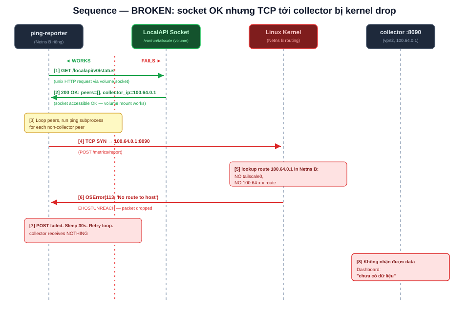
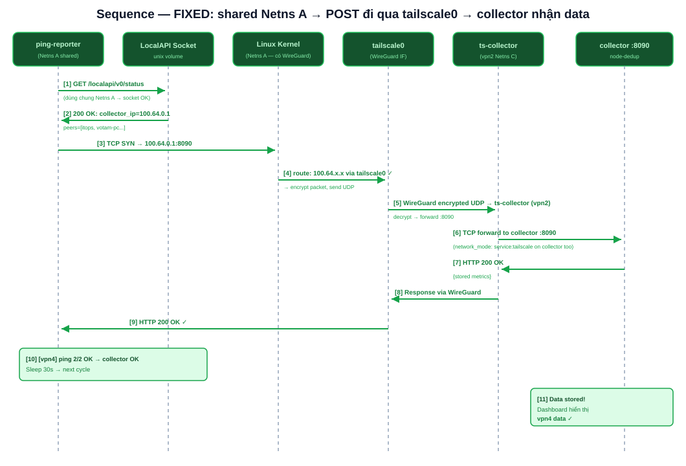
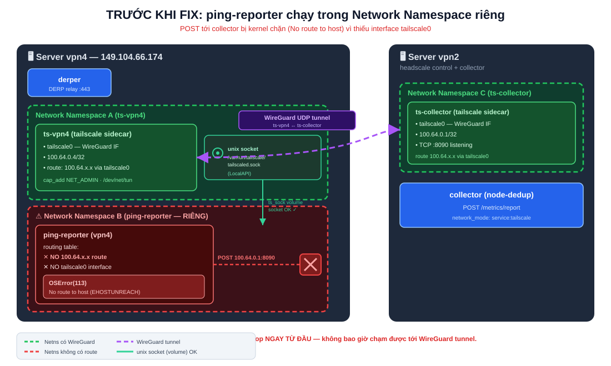
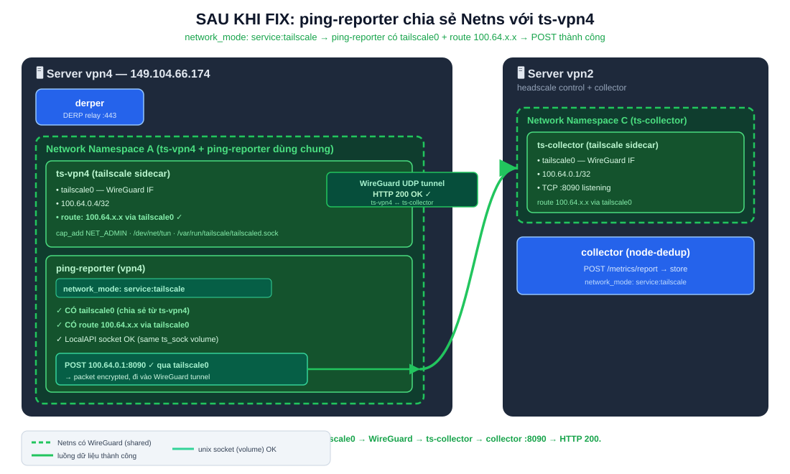
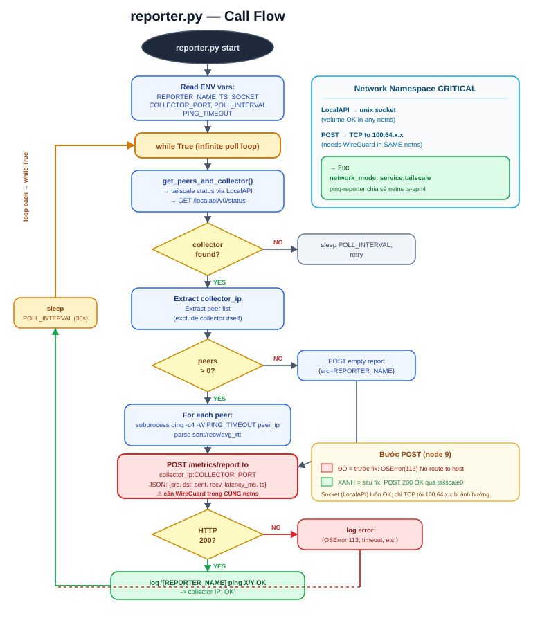

Bug Fix: ping-reporter — OSError(113) do Network Namespace Isolation
Tài liệu kỹ thuật cho dự án deployHeadscale (self-hosted Tailscale/Headscale VPN). Phiên bản 1.0 · Cập nhật 2026-06-19 · ĐÃ FIX & CI PASS.
Tóm tắt
Dashboard hiển thị chưa có dữ liệu — ping-reporter chưa chạy cho node vpn4. Nguyên nhân KHÔNG PHẢI do ping-reporter crash, mà do Docker Network Namespace Isolation:
- Mỗi container Docker mặc định có network namespace (netns) riêng.
- Interface WireGuard
tailscale0(chứa route tới dải100.64.x.x) chỉ tồn tại bên trong netns của ts-vpn4. ping-reporterchạy trong netns riêng của nó → không cótailscale0, không có route100.64.x.x.- Khi
reporter.pygọiPOST http://100.64.0.1:8090/metrics/report, kernel trả về OSError(113, 'No route to host') (EHOSTUNREACH). - LocalAPI socket vẫn OK (mount qua volume, không phụ thuộc netns). Chỉ riêng kết nối TCP tới
100.64.x.xbị chặn.
network_mode: "service:tailscale" cho ping-reporter trong derp-vpn4/docker-compose.yml để nó chia sẻ netns với ts-vpn4, nhờ đó có tailscale0 và route 100.64.x.x.| Thời điểm | Log diag |
|---|---|
| Trước fix | POST collector ERR: OSError(113, 'No route to host') |
| Sau fix | [vpn4] ping 2/2 OK -> collector 100.64.0.1: OK |
Ngoài ra có một lỗi CI liên quan (relay-vpn5-integration) do thiếu go.sum — xem Mục 8.
1. Kiến trúc hệ thống
vpn2 — Control plane
- headscale: control server quản lý ACL, key, node registration.
- ts-collector: tailscale sidecar (tailnet
100.64.0.1), netns riêng (Netns C). - collector (node-dedup): lắng nghe
:8090bên trong netns của ts-collector (network_mode: service:tailscale), nhậnPOST /metrics/report, lưu & deduplicate metric.
vpn4 — DERP relay + ping-reporter
- derper: DERP relay (
:443) cho NAT-traversal. - ts-vpn4: tailscale sidecar (tailnet
100.64.0.4), netns riêng (Netns A). - ping-reporter: tiến trình Python định kỳ lấy peer/collector qua LocalAPI,
pingtừng peer, rồiPOSTkết quả tới collector100.64.0.1:8090.
| Thành phần | Server | Tailnet IP | Cổng | Netns |
|---|---|---|---|---|
| ts-collector | vpn2 | 100.64.0.1 | 8090 | Netns C |
| collector (node-dedup) | vpn2 | (netns C) | 8090 | Netns C (shared) |
| ts-vpn4 | vpn4 | 100.64.0.4 | — | Netns A |
| ping-reporter | vpn4 | (netns A sau fix) | — | Netns A (shared sau fix) |
| derper | vpn4 | (netns mặc định) | 443 | riêng |
tailscale chịu trách nhiệm về mạng tailnet; các container "app" (collector, ping-reporter) mượn netns của nó bằng network_mode: service:tailscale.2. Vấn đề: Docker Network Namespace Isolation
Network namespace là cơ chế Linux kernel cô lập stack mạng: mỗi netns có bảng interface riêng, bảng route riêng, iptables riêng, socket riêng. Mặc định mỗi container Docker được cấp một netns mới.
tailscale0chỉ "nhìn thấy được" trong netns nơitailscaledchạy → Netns A (ts-vpn4).- Bảng route Netns A có dòng:
100.64.0.0/10 dev tailscale0 scope link. ping-reporterở Netns B không có interface đó, không có route đó → gói tin tới100.64.x.x"không biết đi đường nào".
Tại sao LocalAPI socket vẫn OK còn TCP thì hỏng?
| Kênh | Cơ chế | Phụ thuộc netns? | Trong Netns B |
|---|---|---|---|
LocalAPI tailscaled.sock | unix domain socket (volume ts_sock) | Không | OK — đọc status |
POST 100.64.0.1:8090 | TCP/IP qua interface mạng | Có | OSError(113) No route to host |
Unix socket là một file trên filesystem; chỉ cần được mount là dùng được, không cần đi qua interface mạng. Vì thế tailscale status chạy ngon nhưng POST chết — tạo cảm giác "tailscale vẫn chạy mà sao reporter không gửi được data".
3. Phân tích nguyên nhân gốc rễ
Debug theo phương pháp CI test cases tái lập được (không click-and-report thủ công):
- Triệu chứng: Dashboard cho vpn4 trống; node khác có data.
- Loại trừ "reporter crash":
docker logs ping-reporter-vpn4→ tiến trình vẫn chạy, mỗi vòng log POST collector ERR: OSError(113, 'No route to host'). - Loại trừ "LocalAPI hỏng": cùng log thấy
GET /localapi/v0/statustrả200 OK, đọc được peer list +collector_ip=100.64.0.1. → Socket OK. - Khoanh vùng "thiếu route": diag trong netns ping-reporter:
# KHÔNG có tailscale0
$ ip addr
# Không định tuyến được
$ ip route get 100.64.0.1
RTNETLINK answers: No route to host- Đối chiếu netns: interface
tailscale0và route100.64.0.0/10chỉ có trong netns ts-vpn4. - Kết luận: ping-reporter và ts-vpn4 không cùng netns. Mã
reporter.pyđúng; vấn đề thuần túy ở cấu hình mạng Docker.
OSError(113) được kernel sinh ra ngay tại bước tra route — gói tin còn chưa rời máy, nên không bao giờ chạm tới WireGuard tunnel. Khác với lỗi firewall (timeout) hay lỗi DNS.4. Giải pháp
Cho ping-reporter chia sẻ network namespace với container tailscale (ts-vpn4) bằng network_mode: "service:tailscale".
services:
tailscale: # ts-vpn4: Network Namespace A
container_name: ts-vpn4
image: tailscale/tailscale:latest
volumes:
- ts_sock:/var/run/tailscale # volume chứa unix socket
devices:
- /dev/net/tun
cap_add:
- NET_ADMIN
ping-reporter: # FIX: dùng chung Netns A
image: python:3.12-slim
container_name: ping-reporter-vpn4
network_mode: "service:tailscale" # <-- KEY FIX: share ts-vpn4's netns
environment:
- REPORTER_NAME=vpn4
- TS_SOCKET=/var/run/tailscale/tailscaled.sock
- POLL_INTERVAL=30
- COLLECTOR_PORT=8090
volumes:
- ../ping-reporter/reporter.py:/app/reporter.py:ro
- ts_sock:/var/run/tailscale # same socket volume
depends_on:
- tailscaleTại sao fix này đúng
- Docker không tạo netns mới; nó gắn ping-reporter vào netns của ts-vpn4 (Netns A).
- Ping-reporter lập tức "nhìn thấy"
tailscale0và route100.64.0.0/10 dev tailscale0. POST http://100.64.0.1:8090được định tuyến quatailscale0→ mã hóa WireGuard → UDP tới ts-collector (vpn2) → giải mã → forward:8090.
network_mode: service:<x>:
- Không khai báo
ports:trên container chia sẻ netns — port mapping đặt trên container "chủ" (tailscale). depends_on: [tailscale]bắt buộc, để ts-vpn4 khởi động trước (netns phải tồn tại).- Volume socket
ts_sockvẫn cần mount (chia sẻ netns không tự mount filesystem). localhostcủa ping-reporter chính làlocalhostcủa ts-vpn4.- collector ở vpn2 cũng dùng cùng pattern — đó là lý do nó lắng nghe được trên IP tailnet
100.64.0.1.
5. Sequence Diagrams
5.1 Trước khi fix (BROKEN)

5.2 Sau khi fix (FIXED)

6. Architecture Diagrams
6.1 Trước khi fix

6.2 Sau khi fix

7. reporter.py Call Flow

def main():
name = os.environ["REPORTER_NAME"] # vpn4
sock = os.environ["TS_SOCKET"] # tailscaled.sock
port = int(os.environ.get("COLLECTOR_PORT", "8090"))
interval = int(os.environ.get("POLL_INTERVAL", "30"))
timeout = int(os.environ.get("PING_TIMEOUT", "3"))
while True:
peers, collector_ip = get_peers_and_collector(sock) # GET /localapi/v0/status
if not collector_ip:
time.sleep(interval); continue
results = []
for p in peers: # exclude collector itself
sent, recv, avg = ping(p.ip, count=4, wait=timeout)
results.append({"src": name, "dst": p.name,
"sent": sent, "recv": recv,
"latency_ms": avg, "ts": now_iso()})
try:
r = http_post(f"http://{collector_ip}:{port}/metrics/report", results)
if r.status == 200:
log(f"[{name}] ping {ok}/{total} OK -> collector {collector_ip}: OK")
except OSError as e:
log(f"POST collector ERR: {e!r}") # OSError(113) trước khi fix
time.sleep(interval)8. CI Fix: relay-vpn5 go.sum missing
Triệu chứng
no required module provides package go4.org/mem; to add it:
go get go4.org/memNguyên nhân
Job build image có thành phần Go nhưng không có bước setup Go và thiếu go.sum. Khi docker build chạy go build trong môi trường chưa giải quyết module graph, Go không tải được go4.org/mem → build chết.
Cách fix
jobs:
relay-vpn5-integration:
runs-on: ubuntu-latest
steps:
- uses: actions/checkout@v4
- name: Setup Go # <-- THÊM
uses: actions/setup-go@v5
with:
go-version: '1.23' # khớp với go.mod
cache: true
- name: Resolve Go modules # <-- THÊM
run: |
go mod tidy # sinh/đồng bộ go.sum
go mod download
- name: Docker build relay-vpn5
run: docker compose -f relay-vpn5/docker-compose.yml buildgo.sum phải vá ở CI trước, rồi mới deploy.9. Test Cases (CI regression tests)
Biến cả hai lỗi (netns + go.sum) thành test tái lập được, chạy trong GitHub Actions, để chống regression.
TC-1 — ping-reporter phải dùng chung netns
set -euo pipefail
COMPOSE="derp-vpn4/docker-compose.yml"
# ping-reporter PHẢI có network_mode: service:tailscale
grep -A20 'ping-reporter:' "$COMPOSE" | grep -q 'network_mode:.*service:tailscale' \
|| { echo "FAIL: ping-reporter thiếu network_mode service:tailscale"; exit 1; }
# ping-reporter KHÔNG được khai ports:
if grep -A20 'ping-reporter:' "$COMPOSE" | grep -q 'ports:'; then
echo "FAIL: ping-reporter không được khai 'ports:' khi share netns"; exit 1
fi
echo "PASS: netns config OK"TC-2 — Reachability runtime
set -euo pipefail
# Trong netns của ping-reporter PHẢI thấy tailscale0
docker exec ping-reporter-vpn4 ip addr show tailscale0 >/dev/null \
|| { echo "FAIL: không có tailscale0 (sai netns)"; exit 1; }
# PHẢI có route tới dải tailnet
docker exec ping-reporter-vpn4 ip route get 100.64.0.1 | grep -q 'dev tailscale0' \
|| { echo "FAIL: thiếu route 100.64.0.1 via tailscale0"; exit 1; }
# Log KHÔNG được chứa OSError 113
if docker logs ping-reporter-vpn4 2>&1 | grep -q "OSError(113"; then
echo "FAIL: vẫn còn OSError(113)"; exit 1
fi
# Log PHẢI chứa dòng OK
docker logs ping-reporter-vpn4 2>&1 | grep -Eq '\[vpn4\] ping [0-9]+/[0-9]+ OK' \
|| { echo "FAIL: không thấy log 'ping X/Y OK'"; exit 1; }
echo "PASS: reachability OK"TC-3 — Collector nhận được data từ vpn4
set -euo pipefail
docker exec ts-collector wget -qO- http://100.64.0.1:8090/metrics/peers \
| grep -q '"src":"vpn4"' \
|| { echo "FAIL: collector chưa nhận data từ vpn4"; exit 1; }
echo "PASS: collector có data vpn4"TC-4 — CI build relay-vpn5 (go.sum regression)
set -euo pipefail
test -f go.sum || { echo "FAIL: thiếu go.sum"; exit 1; }
go build ./... || { echo "FAIL: go build lỗi (kiểm tra go4.org/mem)"; exit 1; }
echo "PASS: go modules OK"Tích hợp vào workflow
regression-tests:
runs-on: ubuntu-latest
needs: [relay-vpn5-integration]
steps:
- uses: actions/checkout@v4
- run: bash test/test_netns_config.sh
- run: bash test/test_go_modules.sh
# TC-2, TC-3 chạy sau khi compose up trong job integration10. Di chuyển sang server mới (Migration Guide)
Hướng dẫn chuyển vai trò vpn4 (DERP relay + ping-reporter) sang máy chủ mới. Quy trình tương tự cho vpn2.
10.1 Backup state & secrets (TRƯỚC khi tắt máy cũ)
| Hạng mục | Vị trí điển hình | Vì sao quan trọng |
|---|---|---|
| Tailscale state | volume ts-vpn4 (ts_state → /var/lib/tailscale) | Chứa node key. Mất → đăng ký lại, đổi IP tailnet |
| Unix socket volume | ts_sock | Socket runtime, không cần backup |
| DERP certs | /var/lib/derper / cert Let's Encrypt | Tránh re-issue cert, tránh downtime TLS |
| docker-compose & .env | derp-vpn4/, ping-reporter/ | Cấu hình deploy |
derp.yaml (trên vpn2) | repo headscale config | Khai báo DERP region/host của vpn4 |
# Backup tailscale state
docker run --rm -v ts_state:/data -v "$PWD":/backup alpine \
tar czf /backup/ts_state_vpn4.tgz -C /data .
# Backup derper certs
docker run --rm -v derper_certs:/data -v "$PWD":/backup alpine \
tar czf /backup/derper_certs_vpn4.tgz -C /data .
# Backup file cấu hình
tar czf vpn4_config.tgz derp-vpn4/ ping-reporter/10.2 Hai chiến lược về IP tailnet
Chiến lược A — Giữ nguyên IP 100.64.0.4 (khuyến nghị):
- Restore
ts_state_vpn4.tgzvào volume tailscale trước khitailscale up. - Node key cũ tái sử dụng → headscale nhận ra cùng node → giữ nguyên
100.64.0.4. - Không phải sửa gì ở collector,
derp.yaml, hay code.
Chiến lược B — Đăng ký node mới (IP mới):
- Không restore state;
tailscale upvới auth key mới → headscale cấp IP mới (vd100.64.0.7). - Phải cập nhật mọi nơi tham chiếu IP cũ (xem 10.4).
collector_ip động qua LocalAPI status, không hardcode. Đổi IP của vpn4 ít gây ảnh hưởng; điều thực sự cần để mắt là IP của collector (vpn2) và địa chỉ DERP host trong derp.yaml.10.3 Re-deploy bằng GitHub Actions workflow
- Chuẩn bị máy mới: cài Docker + Compose plugin; đảm bảo
/dev/net/tunkhả dụng (modprobe tun); tạo SSH key cho runner (giữ key trongC:\Users\Hoanglong\keys\— vì~/.sshtrên Windows của bạn là file, không phải thư mục). - Cập nhật secrets/inventory trong repo
deployHeadscale: host/IP SSH mới của vpn4. - Restore volumes (nếu dùng Chiến lược A):
docker volume create ts_state
docker run --rm -v ts_state:/data -v "$PWD":/backup alpine \
tar xzf /backup/ts_state_vpn4.tgz -C /data
docker volume create derper_certs
docker run --rm -v derper_certs:/data -v "$PWD":/backup alpine \
tar xzf /backup/derper_certs_vpn4.tgz -C /data- Chạy workflow deploy (GitHub Actions): trigger job deploy vpn4 (push nhánh deploy hoặc
workflow_dispatch) → checkout →docker compose -f derp-vpn4/docker-compose.yml up -d. - Đảm bảo CI pass trước: không deploy nếu
relay-vpn5-integration/regression-testschưa xanh — nhất là TC-1/TC-2 về netns.
10.4 Cập nhật DNS và derp.yaml nếu IP đổi
Nếu địa chỉ public của vpn4 thay đổi (vd cũ 149.104.66.174 → mới X.X.X.X):
- DNS: cập nhật bản ghi A của hostname DERP (vd
vpn4.<domain>) trỏ về IP public mới. Đợi TTL hết hạn. - derp.yaml (trên vpn2):
regions:
901:
regionid: 901
regioncode: vpn4
regionname: "VPN4 DERP"
nodes:
- name: vpn4
regionid: 901
hostname: vpn4.<domain> # cập nhật nếu hostname đổi
ipv4: X.X.X.X # <-- IP public MỚI của vpn4
derpport: 443- Reload headscale:
docker exec headscale headscale debug derp-mapđể kiểm tra, rồidocker restart headscale. - TLS cert: nếu hostname đổi, derper cần cert mới (Let's Encrypt tự động nếu cấu hình ACME). Đổi IP mà giữ hostname → cert cũ vẫn dùng được.
- Verify: từ client tailnet, chạy
tailscale netcheckđể xác nhận DERP region vpn4 phản hồi.
10.5 Checklist sau migration
docker psthấyts-vpn4,ping-reporter-vpn4,derperđềuUp.docker exec ping-reporter-vpn4 ip addr show tailscale0có interface (đúng netns).docker logs ping-reporter-vpn4có [vpn4] ping X/Y OK, không có OSError(113.- Dashboard hiển thị data của vpn4 trở lại.
tailscale netchecktừ client thấy DERP region vpn4.- CI GitHub xanh toàn bộ trước khi coi là hoàn tất.
11. Troubleshooting
OSError(113, 'No route to host') trong log ping-reporter
Nguyên nhân: ping-reporter không cùng netns với tailscale → thiếu route 100.64.x.x.
- Kiểm tra compose có
network_mode: "service:tailscale"ởping-reporterkhông. docker exec ping-reporter-vpn4 ip addr show tailscale0— nếu "Device not found" → sai netns.docker exec ping-reporter-vpn4 ip route get 100.64.0.1— phải thấydev tailscale0.- Sửa compose →
docker compose up -d --force-recreate ping-reporter.
LocalAPI OK nhưng POST vẫn lỗi
Đây chính là chữ ký của bug netns: socket (volume) hoạt động nhưng TCP tới tailnet thì không. Áp dụng cách xử lý ở trên.
Container ping-reporter không start, báo lỗi ports
Nguyên nhân: khai ports: cùng network_mode: service:. Xử lý: xóa ports: khỏi ping-reporter; nếu cần map port, đặt trên container tailscale.
depends_on nhưng netns chưa sẵn sàng
Triệu chứng: ping-reporter crash lúc start vì netns của tailscale chưa tồn tại. Xử lý: đảm bảo depends_on: [tailscale]; có thể thêm healthcheck cho tailscale và condition: service_healthy.
Build CI lỗi no required module provides package go4.org/mem
Nguyên nhân: thiếu go.sum/chưa setup Go trong CI. Xem Mục 8 — thêm setup-go@v5 + go mod tidy.
Sau migration, IP tailnet của vpn4 đổi ngoài ý muốn
Nguyên nhân: không restore ts_state → node đăng ký mới. Xử lý: dùng Chiến lược A (restore state) ở Mục 10.2; hoặc chấp nhận IP mới — ping-reporter tự lấy collector_ip động nên không cần sửa code, chỉ cập nhật derp.yaml/DNS nếu IP public đổi.
tailscale netcheck không thấy DERP region vpn4
Xử lý: kiểm tra DNS A record, cổng 443 mở, cert hợp lệ, và derp.yaml trên vpn2 trỏ đúng ipv4/hostname; restart headscale để nạp lại DERP map.